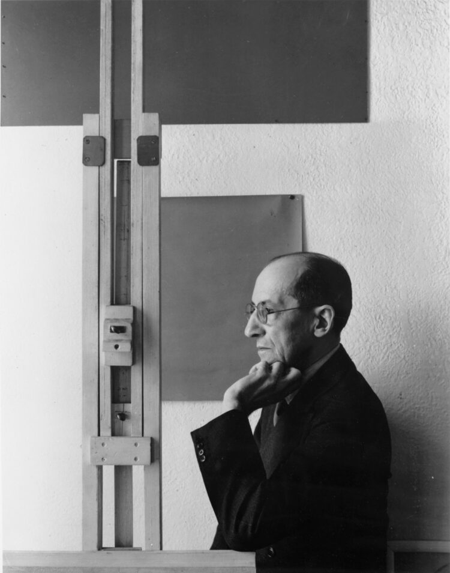

An exercise in seeing
Find your Absolute.
A line. A color. A box. A plane.
Tweak, critique and again and again.
Not at all. Almost. Not quite. Perfect.
Composition studio
Choose a color, then click an area to paint.
Experiment. Perfect. Repeat.A few simple movesHow to play
01 Color
Choose a swatch, then click an area. Color fills every connected space. Repaired rectangular cells keep their predominant color; repaint them to choose another.
02 Compose
Drag a bar to resize the shapes. The light gray outer frame is a draggable guide. Move it inward to gently push neighboring lines together.
03 Add & subtract
Choose a line tool, then click open space. Right-click an interior bar to remove one segment. Exact overlaps merge, but touching segments stay independent. Dragging preserves existing rectangular cells; deletion can leave areas to repair.
04 Keep exploring
Undo a move with the button or ⌘Z / Ctrl+Z. Escape leaves line mode. Save image downloads just your picture, without the gray editing frame.

Photograph: Arnold Newman. Collection: RKD, The Hague.
Image source: Villa Mondriaan ↗
In the spirit of Mondrian
“It is so hard,
the work.”
A few colors. Straight lines. Endless decisions.
Mondrianiac is a place to develop your own intuitions about proportion, rhythm, and balance. There are no correct or incorrect compositions, but many there are adeptical and many ineptical. Find one in which your soul recognizes the Absolute.
*As recalled by Charmion von Wiegand, quoted in Nicholas Fox Weber, Mondrian: His Life, His Art, His Quest for the Absolute (2024), Knopf Doubleday.